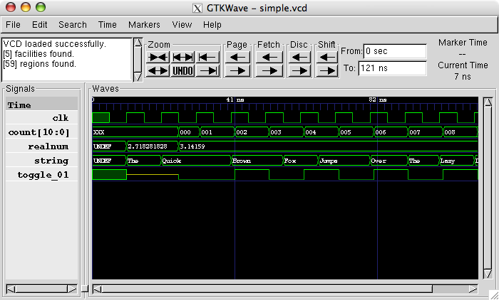

FPGA? FPG Quoi?
MORVAN Pierre
WHO AM I?

Pierre Morvan @Zenika Paris
@ryarnyah
"Du Java mais pas que…"
Par contre je ne suis pas un developpeur hardware non plus!
JE NE VAIS PAS VOUS PARLER DE ça!

NI DE ça!

FPGA (Field Programmable Gate Array)?

USE-CASES (un subset)

- Prototypage microcontroleur
- Composant à usage spécifique (co-processeur AES, compression vidéo, faible production de composants, etc)
- Une très grande quantité d'IO <=> parralellisation de traitements possible.
- Utilisation dans des contextes spécifiques d'IOT (microcontroleur avec TCP intégré)
- Cartes réseau TLS (oui ça existe)
- Processeur spécifique Java (Oui il y en a aussi)
ASICS VS FPGA
ASICS (Application Specific Integrated Circuit)
- Votre CPU en est un.
- Plus couteux <-> nécessite souvent une chaine de production dédiée.
- Moins couteux à l'unité.
- Upgrade impossible ou doit être pris en compte lors du design <=> implique une logique similaire aux FPGAs.
- Plus perfomants (pas de LUTs, placement efficace, etc).
Pour les accros du retro-gaming: MisTER

- Retro-gaming reproduisants les CPUs/GPUs/FPUs
- Utilisation d'un matériel "cheap"
- Permet de reproduire les "bugs" nécessaires à certains jeux.
ET C'EST QUOI UN SIGNAL?

A CLOCK? LIKE MY WATCH?

A CLOCK? LIKE MY WATCH?

FPGA ARCHITECTURE

MUX

- Permet de selectionner des Inputs en fonction d'un signal.
LUT

- Composant permettant de reproduire le comportement de plusieurs éléments dont des portes AND, OR, etc.
- Coeur même de votre FPGA.
| A | B | A AND B | A OR B | A XOR B |
|---|---|---|---|---|
| 0 | 0 | 0 | 0 | 0 |
| 0 | 1 | 0 | 1 | 1 |
| 1 | 0 | 0 | 1 | 1 |
| 1 | 1 | 1 | 1 | 0 |
COMPILATION?

Essentiellement des outils propriétaires associés au constructeur:
- Vivado (Xilinx)
- Quartus (Intel)
- …
Mais certaines alternatives open-source voient le jour:
- Yosys Open SYnthesis Suite
- F4PGA (qui intègre Yosys en mode le GCC du FPGA)
ET LES TESTS?
Mais je croyais que "tester c'est douter"?
Douter sur du hardware c'est juste du suicide!
ET LES TESTS?
Plusieurs types de tests sont applicables:
- Formel (avec par exemple symbiosys)
`ifdef FORMAL initial assume (RST); reg f_past_valid; initial f_past_valid = 1'b0; always @(posedge clk) f_past_valid <= 1'b1; `endif
- Unitaire: Simulation + tests signal (avec un couple de test bench + une analyse des resultats <=> par exemple avec Cocotb)
@cocotb.test() async def check_instr_decoder_decode(dut): """ Test that instr is decoded successfully """ clock = Clock(dut.clk, 10, units="us") cocotb.start_soon(clock.start()) ...
- Materiel: leds, debugger chip, etc
ET ça SE SIMULE TOUT ça?
Plusieurs simulateurs existent, personnellement j'ai beaucoup aimé Verilator:
int main(int argc, char **argv) { Verilated::commandArgs(argc, argv); tb = new BLINKY_TB(); tb->reset(); while (!tb->done()) { tb->tick(); } tb->close(); exit(0); }
Mais il en existe d'autres (propriétaires ou non):
- iCarus verilog
- Verilog-XL
- ModelSIM
- …
DEMO: BLINKY
Ici nous allons juste implémenter un module blinky similaire à celui-ci et l'uploader sur notre FPGA.
Pour le "compiler" nous allons utiliser la suite fournie avec F4PGA (le GCC du FPGA).
module top ( input logic CLK, input logic RST, output logic [15:0] LEDS ); logic [15:0] counter = 0; always @(posedge CLK) begin counter <= counter + 1; if (RST) counter <= 0; end assign LEDS = counter; endmodule
DEMO: BLINKY

DEMO: BLINKY

DEMO
CPU?

RISC vs CISC
- Taille variable ou non des instructions.
- Complexité des instructions.
- Intel transforme en interne les instructions CISC en instructions RISC!
| RISC (Reduced Instruction Set Computer) | CISC (Complex Instruction Set Computer) |
|---|---|
| PowerPC | x86 |
| MIPS | |
| SPARC | |
| ARM |
DEMO: Un CPU RISC
Dans cette demo nous utiliserons un CPU RISC-V avec le jeu d'instruction RV32i (la plus simple) que j'ai développé pour l'occasion :)
- CPU 32 bits.
- Pas de supports des nombres flottants.
- SOC (System on chip) avec des LEDs, une mémoire RAM de 4k, de l'UART (port série).
- Utilisation d'un bus Wishbone pour l'intercommunication entre les composants.
- Un firmware minimal permettant d'executer d'autes programmes.
- Loin d'être perfomant!
- Il y a plus que surements des bugs!
- Mais on va voir ensemble que ça marche et comment j'y suis arrivé :)
DEMO: Un CPU RISC


DEMO: Un CPU RISC

DEMO
MERCI